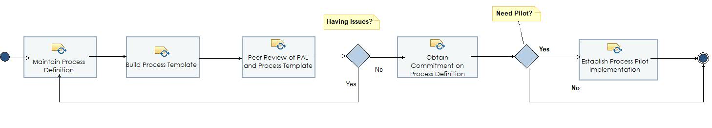

Phase: Establishing and Acting Phase
Third Phase of the NIC ADPI whose main purpose is to establish the solution in terms of the full process definition and measurable goals and metrics to monitor ADPI progress.
Description
Work Breakdown Structure
Team Allocation
Work Product Usage
Workflow

Work Breakdown